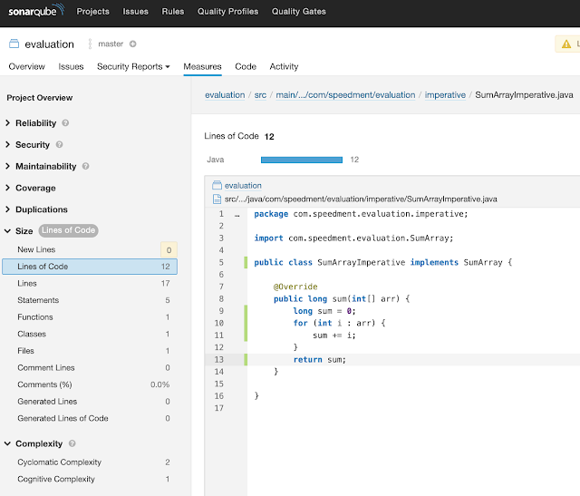
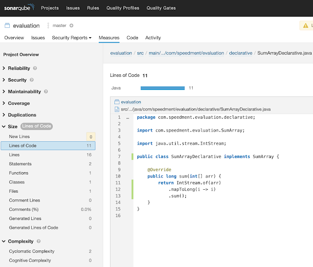
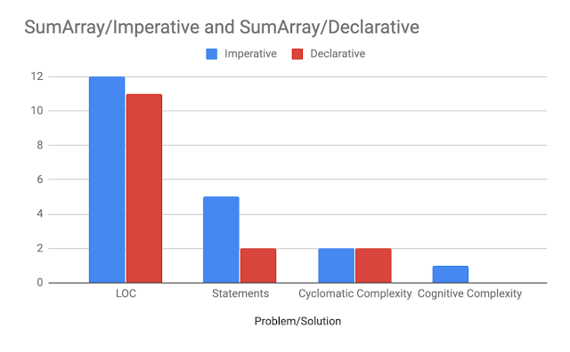
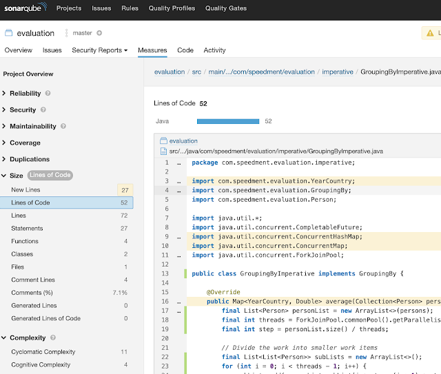
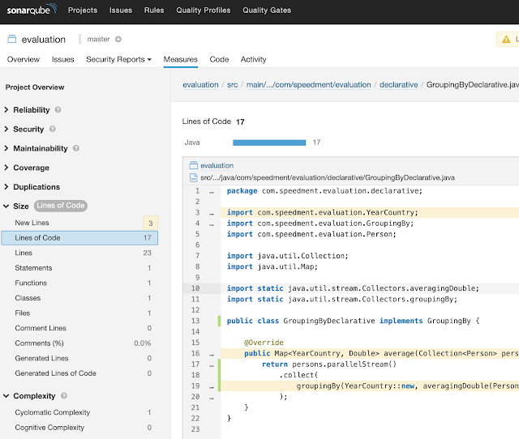
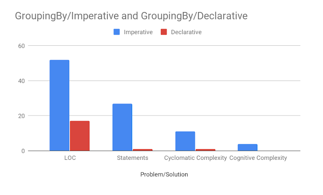
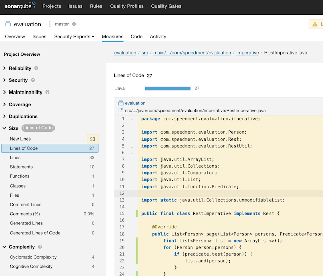
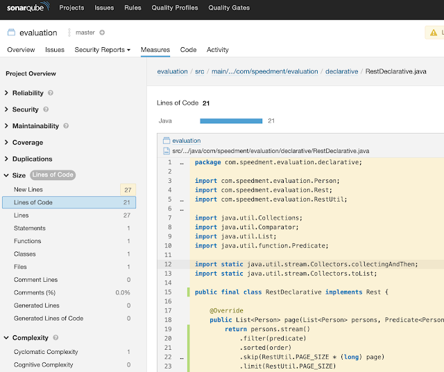
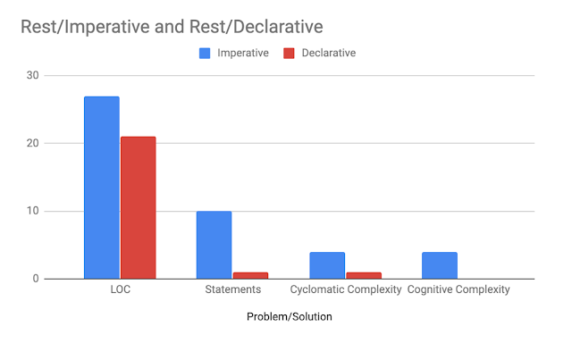
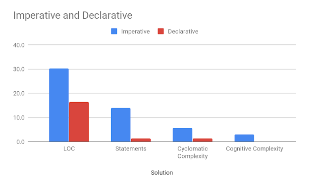

原文连接:https://www.cnblogs.com/liululee/p/11444588.html
阅读本文并了解如何使用具有功能组合的声明性代码成为更好的程序员。
在许多情况下，具有功能组合的声明性解决方案提供优于传统命令式代码的代码度。阅读本文并了解如何使用具有功能组合的声明性代码成为更好的程序员。
在本文中，我们将仔细研究三个问题示例，并研究两种不同的技术（命令式和声明性）来解决这些问题。
本文中的所有源代码都是开源的，可从https://github.com/minborg/imperative-vs-declarative获取。最后，我们还将看到本文的学习如何应用于数据库应用程序领域。我们将使用Speedment Stream作为ORM工具，因为它提供了与数据库中的表，视图和连接相对应的标准Java Streams，并支持声明性构造。
实际上有无数个候选示例可用于代码度量评估。
1.问题示例
在本文中，我选择了开发人员在日常工作可能遇到的三个常见问题：
1.1.SumArray
迭代数组并执行计算
1.2.GroupingBy
并行聚合值
1.3.Rest
使用分页实现REST接口
2.解决方案技术
正如本文开头所描述的，我们将使用这两种编码技术解决问题：
2.1 命令式解决方案
一个命令式的解决方案，我们使用带有for循环和显式可变状态的传统代码样例。
2.2 声明式解决方案
声明式解决方案，其中我们组合各种函数以形成解决问题的高阶复合函数，通常使用java.util.stream.Stream或其变体。
3.代码指标
然而，我们的想法是使用SonarQube（此处为SonarQube Community Edition，Version 7.7）将静态代码分析应用于不同的解决方案，以便我们可以为问题/解决方案组合推导出有用且标准化的代码度量标准。然后将比较这些指标。
在本文中，我们将使用以下代码度量标准：
3.1. LOC
“LOC”表示“代码行”，是代码中非空行的数量。
3.2. Statements
是代码中的语句总数。每个代码行上可能有零到多个语句。
3.3. 循环复杂性
表示代码的复杂性，并且是通过源代码程序的线性独立路径数量的定量度量。例如，单个“if”子句在代码中显示两条单独的路径。在维基百科上阅读更多内容。
3.4。认知复杂性
SonarCube声称：
“认知复杂性改变了使用数学模型来评估软件可维护性的实践。它从Cyclomatic Complexity设定的先例开始，但是使用人为判断来评估结构应该如何计算，并决定应该将什么添加到模型中作为一个整体结果，它产生了方法复杂性分数，这使得程序员对可维护性模型的评估比以前更公平。“
在SonarCube自己的页面上可以阅读更多内容。
通常情况下，需要设想一个解决方案，其中这些指标很小而不是很大。
对于记录，应该注意下面设计的任何解决方案只是解决任何给定问题的一种方法。如果您知道更好的解决方案，请随时通过https://github.com/minborg/imperative-vs-declarative拉取请求提交意见。
4.迭代数组
我们从简单开始。此问题示例的对象是计算int数组中元素的总和，并将结果返回为long。以下接口定义了问题：
public interface SumArray {
long sum(int[] arr);
}4.1.命令式解决方案
以下解决方案使用命令式技术实现SumArray问题：
public class SumArrayImperative implements SumArray {
@Override
public long sum(int[] arr) {
long sum = 0;
for (int i : arr) {
sum += i;
}
return sum;
}
}4.2声明式解决方案
这是一个使用声明性技术实现SumArray的解决方案：
public class SumArrayDeclarative implements SumArray {
@Override
public long sum(int[] arr) {
return IntStream.of(arr)
.mapToLong(i -> i)
.sum();
}
}请注意，IntStream :: sum只返回一个int，因此，我们必须加入中间操作mapToLong（）。
4.3.分析
SonarQube提供以下分析：


SumArray的代码度量标准如下表所示（通常更低）：
| 技术 | LOC | Statements | 循环复杂性 | 认知复杂性 |
|---|---|---|---|---|
| Imperative | 12 | 5 | 2 | 1 |
| Functional | 11 | 2 | 2 | 0 |
这是它在图表中的值（通常更低）：

5.并行聚合值
这个问题示例的对象是将Person对象分组到不同的桶中，其中每个桶构成一个人的出生年份和一个人工作的国家的唯一组合。对于每个组，应计算平均工资。聚合应使用公共ForkJoin池并行计算。
这是（不可变的）Person类：
public final class Person {
private final String firstName;
private final String lastName;
private final int birthYear;
private final String country;
private final double salary;
public Person(String firstName,
String lastName,
int birthYear,
String country,
double salary) {
this.firstName = requireNonNull(firstName);
this.lastName = requireNonNull(lastName);
this.birthYear = birthYear;
this.country = requireNonNull(country);
this.salary = salary;
}
public String firstName() { return firstName; }
public String lastName() { return lastName; }
public int birthYear() { return birthYear; }
public String country() { return country; }
public double salary() { return salary; }
// equals, hashCode and toString not shown for brevity
}我们还定义了另一个名为YearCountry的不可变类，把它作为分组键：
public final class YearCountry {
private final int birthYear;
private final String country;
public YearCountry(Person person) {
this.birthYear = person.birthYear();
this.country = person.country();
}
public int birthYear() { return birthYear; }
public String country() { return country; }
// equals, hashCode and toString not shown for brevity
}定义了这两个类之后，我们现在可以通过接口定义此问题示例：
public interface GroupingBy {
Map<YearCountry, Double> average(Collection<Person> persons);
}5.1.命令式的解决方案
实现GroupingBy示例问题的命令式解决方案并非易事。这是问题的一个解决方案：
public class GroupingByImperative implements GroupingBy {
@Override
public Map<YearCountry, Double> average(Collection<Person> persons) {
final List<Person> personList = new ArrayList<>(persons);
final int threads = ForkJoinPool.commonPool().getParallelism();
final int step = personList.size() / threads;
// Divide the work into smaller work items
final List<List<Person>> subLists = new ArrayList<>();
for (int i = 0; i < threads - 1; i++) {
subLists.add(personList.subList(i * step, (i + 1) * step));
}
subLists.add(personList.subList((threads - 1) * step, personList.size()));
final ConcurrentMap<YearCountry, AverageAccumulator> accumulators = new ConcurrentHashMap<>();
// Submit the work items to the common ForkJoinPool
final List<CompletableFuture<Void>> futures = new ArrayList<>();
for (int i = 0; i < threads; i++) {
final List<Person> subList = subLists.get(i);
futures.add(CompletableFuture.runAsync(() -> average(subList, accumulators)));
}
// Wait for completion
for (int i = 0; i < threads; i++) {
futures.get(i).join();
}
// Construct the result
final Map<YearCountry, Double> result = new HashMap<>();
accumulators.forEach((k, v) -> result.put(k, v.average()));
return result;
}
private void average(List<Person> subList, ConcurrentMap<YearCountry, AverageAccumulator> accumulators) {
for (Person person : subList) {
final YearCountry bc = new YearCountry(person);
accumulators.computeIfAbsent(bc, unused -> new AverageAccumulator())
.add(person.salary());
}
}
private final class AverageAccumulator {
int count;
double sum;
synchronized void add(double term) {
count++;
sum += term;
}
double average() {
return sum / count;
}
}
}5.2. 声明式解决方案
这是一个使用声明性构造实现GroupingBy的解决方案：
public class GroupingByDeclarative implements GroupingBy {
@Override
public Map<YearCountry, Double> average(Collection<Person> persons) {
return persons.parallelStream()
.collect(
groupingBy(YearCountry::new, averagingDouble(Person::salary))
);
}
}在上面的代码中，我使用了一些来自Collectors类的静态导入（例如Collectors :: groupingBy）。这不会影响代码指标。
5.3.分析
SonarQube提供以下分析：


GroupingBy的代码度量标准如下表所示（通常更低）：
| 技术 | LOC | Statements | 循环复杂性 | 认知复杂性 |
|---|---|---|---|---|
| Imperative | 52 | 27 | 11 | 4 |
| Functional | 17 | 1 | 1 | 0 |
这是它在图表中的值（通常更低）：

6.实现REST接口
在该示例性问题中，我们将为Person对象提供分页服务。出现在页面上的Persons必须满足某些（任意）条件，并按特定顺序排序。该页面将作为不可修改的Person对象列表返回。
这是一个解决问题的接口：
public interface Rest {
/**
* Returns an unmodifiable list from the given parameters.
*
* @param persons as the raw input list
* @param predicate to select which elements to include
* @param order in which to present persons
* @param page to show. 0 is the first page
* @return an unmodifiable list from the given parameters
*/
List<Person> page(List<Person> persons,
Predicate<Person> predicate,
Comparator<Person> order,
int page);
}页面的大小在名为RestUtil的单独工具程序类中：
public final class RestUtil {
private RestUtil() {}
public static final int PAGE_SIZE = 50;
}6.1.命令式实现方法
public final class RestImperative implements Rest {
@Override
public List<Person> page(List<Person> persons,
Predicate<Person> predicate,
Comparator<Person> order,
int page) {
final List<Person> list = new ArrayList<>();
for (Person person:persons) {
if (predicate.test(person)) {
list.add(person);
}
}
list.sort(order);
final int from = RestUtil.PAGE_SIZE * page;
if (list.size() <= from) {
return Collections.emptyList();
}
return unmodifiableList(list.subList(from, Math.min(list.size(), from + RestUtil.PAGE_SIZE)));
}
}6.2.声明式解决方法
public final class RestDeclarative implements Rest {
@Override
public List<Person> page(List<Person> persons,
Predicate<Person> predicate,
Comparator<Person> order,
int page) {
return persons.stream()
.filter(predicate)
.sorted(order)
.skip(RestUtil.PAGE_SIZE * (long) page)
.limit(RestUtil.PAGE_SIZE)
.collect(collectingAndThen(toList(), Collections::unmodifiableList));
}
}6.3.分析
SonarQube提供以下分析：


Rest的代码度量标准如下表所示（通常更低）：
| 技术 | LOC | Statements | 循环复杂性 | 认知复杂性 |
|---|---|---|---|---|
| Imperative | 27 | 10 | 4 | 4 |
| Functional | 21 | 1 | 1 | 0 |
这是它在图表中的值（通常更低）：

7.Java 11改进
上面的例子是用Java 8编写的。使用Java 11，我们可以使用LVTI（局部变量类型推断）缩短声明性代码。这会使我们的代码更短，但不会影响代码指标。
@Override
public List<Person> page(List<Person> persons,
Predicate<Person> predicate,
Comparator<Person> order,
int page) {
final var list = new ArrayList<Person>();
...与Java 8相比，Java 11包含一些新的收集器。例如，Collectors.toUnmodifiableList（），它将使我们的声明性Rest解决方案更短：
public final class RestDeclarative implements Rest {
@Override
public List<Person> page(List<Person> persons,
Predicate<Person> predicate,
Comparator<Person> order,
int page) {
return persons.stream()
.filter(predicate)
.sorted(order)
.skip(RestUtil.PAGE_SIZE * (long) page)
.limit(RestUtil.PAGE_SIZE)
.collect(toUnmodifiableList());
}同样，这不会影响代码指标。
8.摘要
三个示例性问题的平均代码度量产生以下结果（通常更低）：

鉴于本文中的输入要求，当我们从命令式构造到声明式构造时，所有代码度量标准都有显着改进。
8.1.在数据库应用程序中使用声明性构造
为了在数据库应用程序中获得声明性构造的好处，我们使用了Speedment Stream。 Speedment Stream是一个基于流的Java ORM工具，可以将任何数据库表/视图/连接转换为Java流，从而允许您在数据库应用程序中应用声明性技能。
您的数据库应用程序代码将变得更好。事实上，针对数据库的Speedment和Spring Boot的分页REST解决方案可能表达如下：
public Stream<Person> page(Predicate<Person> predicate,
Comparator<Person> order,
int page) {
return persons.stream()
.filter(predicate)
.sorted(order)
.skip(RestUtil.PAGE_SIZE * (long) page)
.limit(RestUtil.PAGE_SIZE);
}Manager<Person> persons由Speedment提供，并构成数据库表“Person”的句柄，可以通过Spring使用@AutoWired注解。
9.总结
选择声明性命令式解决方案可以大大降低一般代码复杂性，并且可以提供许多好处，包括更快的编码，更好的代码质量，更高的可读性，更少的测试，更低的维护成本等等。
为了从数据库应用程序中的声明性构造中受益，Speedment Stream是一种可以直接从数据库提供标准Java Streams的工具。
掌握声明性构造和功能组合是当今任何当代Java开发人员必须的。
8月福利准时来袭，关注公众号
后台回复：003即可领取7月翻译集锦哦~
往期福利回复：001，002即可领取！